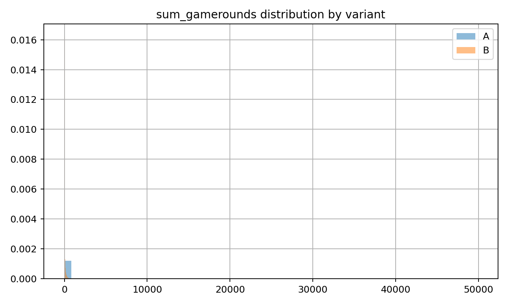
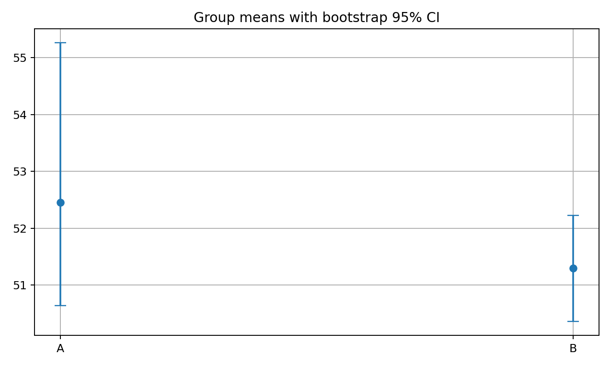

A: 0.1902 B: 0.1820
Δ = -0.0082 (95% CI [-0.0133, -0.0031]),
p = 0.002
A: 52.46 B: 51.30
Δ = -1.16
(Welch 95% CI [-3.72, 1.40];
Bootstrap 95% CI [-4.04, 0.95];
Permutation p = 0.470)


Base the ship/no-ship on the primary KPI. Secondary is supportive and not significant here.